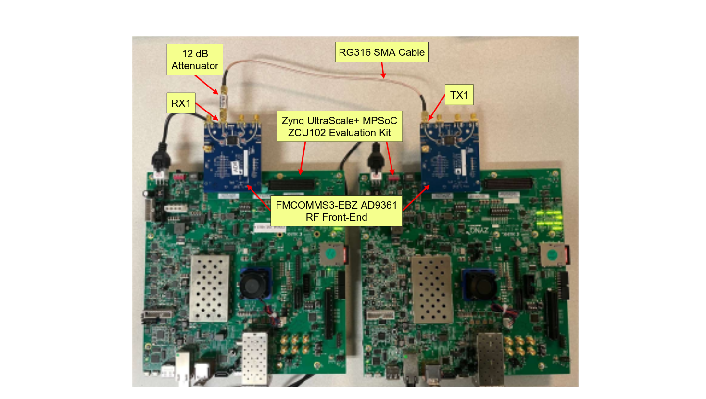
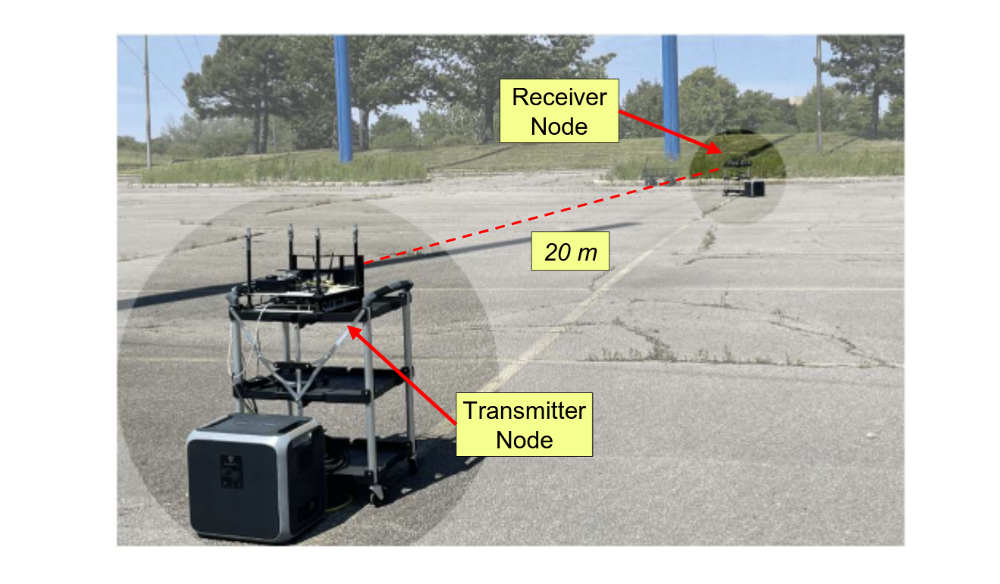
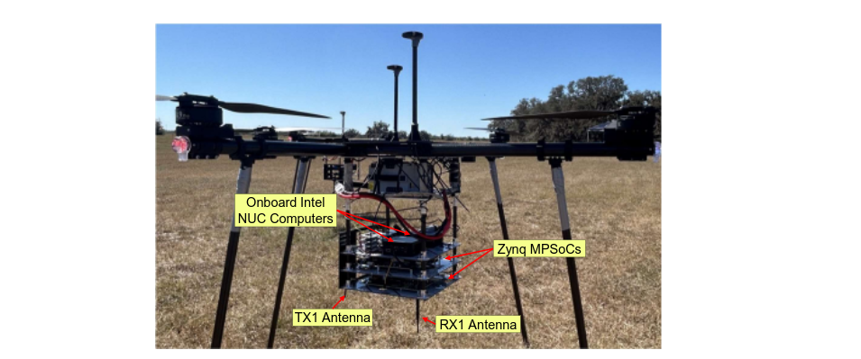
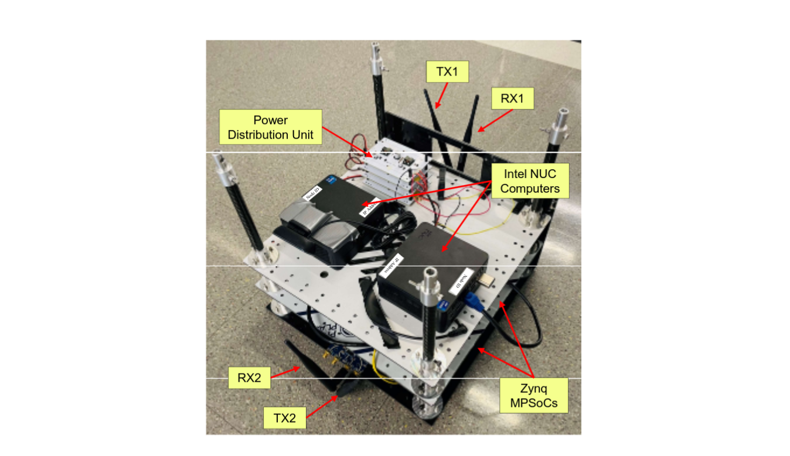
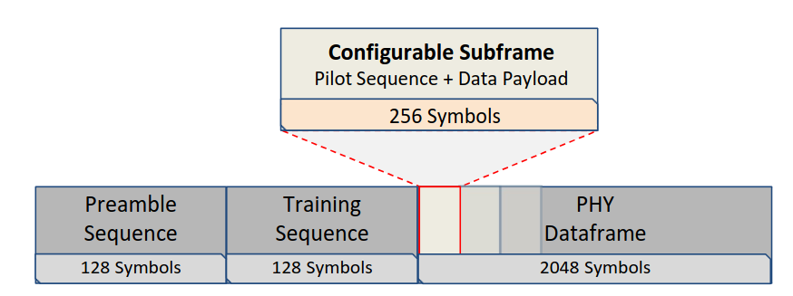
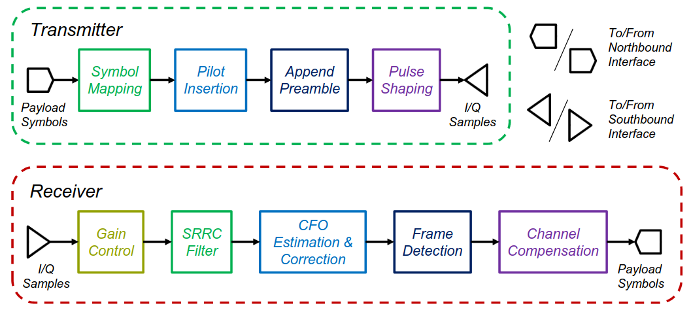
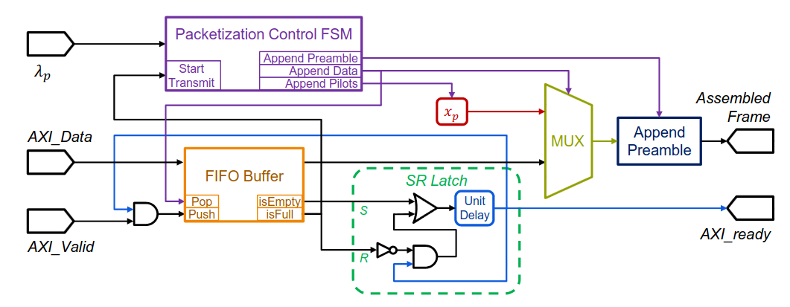
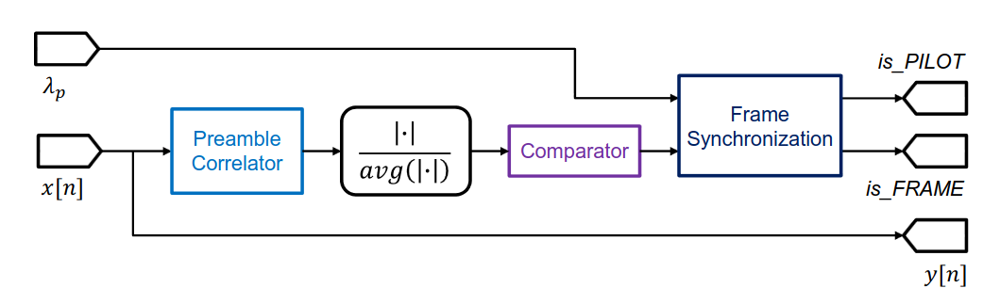
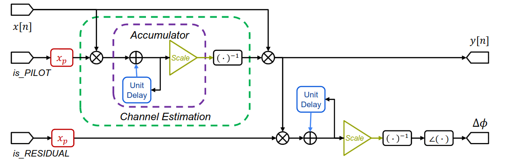

BenchLink
An SoC-Based Benchmark for Resilient Communication Links in GPS-Denied Environments
Introduction
GPS technology has long provided the accurate timing and positioning that modern wireless communication systems depend on. Cellular networks use GPS to synchronize base stations, support time division duplexing (TDD), and enable techniques such as Coordinated Multi-Point (CoMP) and hybrid aerial-ground networking. However, GPS signals can be unreliable, unavailable, or intentionally disrupted in many emerging applications, including vehicle networks in the field, unmanned aerial vehicles (UAVs) vulnerable to interference and spoofing, urban canyons, tunnels, and indoor environments.
When GPS is unavailable, the local oscillators of communicating nodes drift independently, introducing carrier frequency offset (CFO) and gradual phase rotation of the constellation points. This challenge is further compounded by mobility: UAV platforms experience rapid fluctuations in signal strength, phase, vibrations, and dynamic multipath propagation.
BenchLink is a System-on-Chip (SoC)-based benchmark for resilient communication links that operates without GPS and supports adaptive pilot density and modulation. Unlike General Purpose Processor (GPP)-based software-defined radios (e.g., USRPs), the SoC-based design allows for more precise and deterministic latency control, which is a critical advantage for applications such as integrated sensing and communications (ISAC) and Positioning, Navigation, and Timing (PNT).
BenchLink is implemented and evaluated on Zynq UltraScale+ MPSoCs and has been demonstrated in both ground-to-ground (G2G) and air-to-air (A2A) UAV environments. The complete SoC-based design, source code, and a comprehensive experimental dataset have been made available to the wireless community.

Hardware and Testbed



Software & Hardware Prerequisites
Hardware Requirements
| Component | Specification | Notes |
|---|---|---|
| MPSoC Platform | Xilinx Zynq UltraScale+ ZCU102 Evaluation Kit | Quad-core ARM Cortex-A53 (PS) + FPGA fabric (PL) |
| RF Front-End | Analog Devices AD-FMCOMMS3-EBZ | AD9361 transceiver; 70 MHz – 6.0 GHz; up to 56 MHz BW; FMC HPC |
| Onboard Computer (Field Only) | Intel NUC or equivalent mini-PC | Used only for outdoor/field deployments due to compact form factor. For indoor/lab testing, any standard PC or laptop connected via Ethernet can be used instead. |
| Antennas | Omnidirectional monopole antennas | One TX, one RX per node; 2.4 GHz band compatible |
| Attenuator (Indoor) | 12 dB Mini-Circuits fixed RF attenuator | For wired-channel indoor testing to avoid receiver saturation |
| Cables | RG316 SMA coaxial cable | For wired-channel experiments; SMA connectors |
| Power Supply (Field) | Bluetti Solar Generator AC180 (or similar) | High-capacity portable power station for outdoor deployments |
| Webcam | USB webcam | Connected to the host computer for live video data generation |
Software Requirements
Required: MathWorks MATLAB / Simulink
BenchLink is prototyped using the MathWorks HW/SW co-design workflow. MATLAB and Simulink are required for building, modifying, and deploying the design. BenchLink has been tested on both MATLAB R2021b and R2024b.
The following MATLAB toolboxes and add-ons are required:
| Toolbox / Add-On | Purpose |
|---|---|
| MATLAB | Core environment |
| Simulink | Streaming algorithm development and interface model |
| HDL Coder | RTL code and IP core generation from Simulink DUT |
| HDL Coder Support Package for AMD FPGA and SoC Devices | ZCU102 reference design, bitstream generation via Vivado |
| Fixed-Point Designer | Floating-to-fixed-point conversion for FPGA implementation |
| Embedded Coder | C code generation for ARM PS software |
| Embedded Coder Support Package for AMD SoC Devices | ARM deployment and Linux image for Zynq |
| Embedded Coder Support Package for ARM Cortex-A Processors | Required dependency for AMD SoC support |
| Embedded Coder Support Package for ARM Cortex-M Processors | Required dependency |
| SoC Blockset | SoC modeling and HW/SW co-design workflow |
| SoC Blockset Support Package for AMD FPGA and SoC Devices | AD9361 radio reference designs and hardware setup |
| Communications Toolbox | Modulation, channel models, signal processing functions |
| DSP System Toolbox | Streaming signal processing blocks |
| DSP HDL Toolbox | HDL-optimized DSP blocks for FPGA |
| Signal Processing Toolbox | Filter design and spectral analysis |
| Wireless HDL Toolbox | HDL-ready wireless communication blocks |
| HDL Verifier | Runtime FPGA signal capture and debugging |
| Simulink Coder | Code generation from Simulink models |
| Simulink Compiler | Standalone application deployment |
| MATLAB Coder | C/C++ code generation from MATLAB |
| MATLAB Compiler | Standalone MATLAB application packaging |
| MATLAB Compiler SDK | Shared library generation |
Required: Third-Party Tool
| Software | Purpose | Version / Notes |
|---|---|---|
| Xilinx Vivado Design Suite | FPGA synthesis, place-and-route, bitstream generation (invoked automatically by HDL Coder) | 2021.1 (for R2021b) or 2024.1 (for R2024b) |
Optional: For Standalone Deployment Without MATLAB
The following tools are only needed if you want to deploy or modify BenchLink independently of the MATLAB/Simulink workflow (e.g., working directly with the generated HDL or building custom Linux images):
| Software | Purpose | Notes |
|---|---|---|
| Xilinx Vitis / SDK | ARM bare-metal or Linux application development outside MATLAB | Paired with your Vivado version |
| Analog Devices HDL Reference Designs | AD9361 HDL IP core for manual Vivado integration | github.com/analogdevicesinc/hdl |
| libiio Library | Direct Ethernet interface between host and MPSoC (without MATLAB) | github.com/analogdevicesinc/libiio |
| Analog Devices Linux Distribution | Custom Linux kernel on ARM PS | ADI Kuiper Linux or PetaLinux-based build |
| Python 3.x | Dataset analysis, post-processing, visualization | NumPy, SciPy, Matplotlib |
Knowledge Prerequisites
Users should be familiar with the basics of digital communications (modulation, pulse shaping, synchronization), FPGA development workflows (HDL design, synthesis, place-and-route), and the Zynq SoC architecture (PS/PL partitioning, AXI interfaces). Familiarity with the AD9361 transceiver and the Analog Devices HDL IP ecosystem is helpful but not required; this guide covers the relevant interfaces.
Setup Guide
Step 1: Hardware Assembly
Connect the AD-FMCOMMS3-EBZ board to the ZCU102 via the FMC High Pin Count (HPC) connector. Attach the TX and RX antennas (or SMA cable for wired testing) to the FMCOMMS3 TX1 and RX1 SMA ports. Connect a host computer to the ZCU102 via Ethernet. For indoor and lab testing, any standard PC or laptop running MATLAB can serve as the host. Power the ZCU102 using its standard 12V supply.
For outdoor field deployments, an Intel NUC or similar mini-PC is used as the onboard computer due to its compact form factor. In this case, integrate the NUC, ZCU102, and FMCOMMS3 into the custom portable BenchLink module and connect to a high-capacity power station (e.g., Bluetti AC180).

Step 2: Install and Configure MATLAB HW/SW Co-Design Environment
Follow the MathWorks installation guide for HW/SW co-design. The full procedure is documented at: Installation for Hardware-Software Co-Design. The key steps are:
- Set up host-radio communication: Connect the ZCU102 to your host PC via Ethernet and note the assigned IP address (default: 192.168.3.2). See Set Up AMD FPGA and SoC Devices.
- Install Xilinx Vivado: Install Vivado 2021.1 (for R2021b) or 2024.1 (for R2024b). This is invoked automatically by HDL Coder during bitstream generation.
- Install HDL Coder Support Package for AMD FPGA and SoC Devices: In MATLAB, go to
Add-Ons > Get Hardware Support Packagesand install it. This enables FPGA code generation for the ZCU102. - Install Embedded Coder Support Package for AMD SoC Devices: Same procedure via Add-Ons. This enables ARM code generation and Linux deployment for the Zynq board. (Requires Embedded Coder and Embedded Coder Support Package for ARM Cortex-A Processors.)
- Set up IP address in MATLAB: Verify connectivity by running:
devzynq = zynq('linux','192.168.3.2','root','root','/tmp'); - Set up Vivado tool path and HDL IP repositories:
hdlsetuptoolpath('ToolName','Xilinx Vivado','ToolPath', ... '/opt/Xilinx/Vivado/2024.1/bin') setupzynqradiorepositories;
For a complete reference example of this workflow applied to a QPSK transceiver on the AD9361, see: HW/SW Co-Design QPSK Transmit and Receive Using AD9361/AD9364.
Step 3: Generate IP Core, Bitstream, and Deploy
Open benchlink.slx in Simulink (make sure all_variables.mat is loaded in the workspace). The design is partitioned into a DUT subsystem (FPGA user logic) and an interface model (ARM processing). The build process follows these stages:
- HDL Workflow Advisor (IP Core + Bitstream): Right-click the DUT subsystem and select
HDL Code > HDL Workflow Advisor. Set the target toIP Core Generationwith the ZCU102 + FMCOMMS3 reference design. The advisor generates RTL code, creates an IP core, integrates it with the AD9361 reference design, invokes Vivado for synthesis and place-and-route, and produces the bitstream. - Generate Software Interface Model: The HDL Workflow Advisor generates a software interface model with AXI driver blocks that map to the FPGA IP core registers. Note the AXI-Lite base addresses and offsets produced at this stage; you will need these if using the standalone Python/C scripts later.
- Build Interface Model: Build the generated interface model using Embedded Coder, which generates C code for the ARM PS and produces an ELF file for the Cortex-A53.
- Deploy to Hardware: From the Simulink interface model, program the FPGA bitstream and launch the ARM executable on the ZCU102. You can initially run in Monitor & Tune mode to verify the link is functional before switching to independent operation.
Step 4: Run the Link
There are two ways to operate BenchLink once the bitstream and ARM software are deployed:
Option A: MATLAB Interface (Recommended for Development)
Run the Simulink interface model in Monitor & Tune or External mode on the host computer. This lets you set AXI-Lite parameters and stream AXI4-Stream data directly from MATLAB, with live monitoring of link metrics in Simulink scopes.
Option B: Standalone Python/C Scripts (For Independent Operation)
Once the bitstream is loaded and the ARM software is running (either from a prior MATLAB deployment or booted from SD card), you can operate the link independently using the provided scripts without MATLAB:
- Set RF front-end parameters: Run
set_radio_params.pyto configure the AD9361 carrier frequency, sample rate, and TX/RX gains. - Set AXI-Lite registers: Run
benchlink_axilite.pyto configure link parameters (modulation, pilot repetitions, thresholds). You must set the correct base address and offset values from the HDL Workflow Advisor output. - Compile AXI-Stream TX programs: Cross-compile the appropriate C program for your desired pilot repetition count using
gcc-linaro-6.3.1:# Example: compile for λp=4 arm-linux-gnueabihf-gcc -o tx_4pilot 4_pilot_reps.c -liio - Send and receive data: Use
send_data.pyto transmit data through the compiled AXI-Stream C program, andrecv_data.pyto receive data viaiio_read_module.pyand write results to a CSV file.
Step 5: Run an Experiment
With the hardware powered on and the FPGA programmed, configure the experiment parameters: modulation scheme (4QAM, 8QAM, 16QAM, 64QAM), pilot repetitions (λp = 1, 2, 4, 6, or 8), TX/RX gains, and carrier frequency. Start the transmitter and receiver applications. BenchLink will automatically log all transmitted and received packets, timestamps, CRC results, signal quality indicators, residual frequency offset, goodput, throughput, channel estimates, and EVM to structured data files with SigMF-compliant metadata.
Hardware/Software Co-Design
BenchLink follows a hardware/software co-design methodology that partitions the communication system across the heterogeneous computing resources of the Zynq UltraScale+ MPSoC. The MPSoC integrates a software-programmable Processing System (PS), a quad-core ARM Cortex-A53 application processor: with reconfigurable Programmable Logic (PL), i.e., FPGA fabric, connected through high-speed AXI interconnects.
Design Rationale
The two subsystems serve complementary roles. The PL fabric is ideal for time-deterministic, high-speed, parallel processing: computationally intensive physical layer tasks such as high-throughput baseband filtering, pulse shaping, correlation, and data exchange with the DAC/ADC of the RF front-end are all mapped to FPGA logic. The PS, meanwhile, handles sequential and unpredictable processing: RF front-end configuration, higher-layer protocol management, control signal generation, and data I/O between the PHY and upper layers.
This partitioning gives BenchLink its key advantage over GPP-based SDRs: deterministic, low-latency processing of time-critical PHY functions directly in hardware, while retaining the flexibility of software for control, configuration, and protocol management.
Development Workflow
The top-down workflow proceeds through several stages:
- System Specification & Golden Reference: Define system requirements and develop the wireless algorithms in MATLAB. This floating-point, frame-based algorithm serves as the "golden reference" for verifying all downstream refinements.
- Streaming Algorithm: Convert the frame-based golden reference into a streaming model in Simulink, incorporating synchronous dataflow, parallel paths, pipelining, and frame markers.
- HW-SW Partitioning: Decide which parts of the streaming model execute in PL (the Design Under Test / DUT module) versus PS (embedded software). Computationally intensive PHY blocks go to PL; control logic and I/O management go to PS.
- Hardware Architecture Design: Leverage HDL-optimized IP blocks from the HDL Coder library. Perform floating-to-fixed-point conversion using Fixed-Point Designer, balancing numerical accuracy against resource usage. For blocks with high dynamic range or trigonometric functions (e.g., CORDIC), native floating-point IP may be used selectively.
- HDL Generation & Synthesis: HDL Coder generates RTL code and an IP core for the DUT. Xilinx Vivado performs synthesis, mapping, place-and-route, and timing analysis, ultimately producing the FPGA bitstream.
- Software Build: Embedded Coder generates C code for the PS side. The Xilinx SDK builds an Executable and Linkable Format (ELF) file for the ARM processor. AXI driver blocks replace the HW-SW interconnects in the embedded software.
- Deployment & Verification: The bitstream programs the FPGA and the ELF runs on the ARM. A host computer can run the Simulink interface model in external or hardware-in-the-loop (HIL) mode for runtime data streaming, configuration, and verification.
Platform Architecture
The BenchLink platform consists of three major layers: the Onboard Computer (northbridge), the MPSoC Platform, and the RF Front-End (southbridge): connected through well-defined interfaces.
Host Computer
The host computer runs the MATLAB/Simulink interface model that communicates with the ZCU102 over Ethernet. Through this interface, users can stream data to and from the PHY layer, adjust link parameters at runtime, and monitor signal quality metrics. For indoor and lab testing, any PC or laptop running MATLAB serves as the host. For outdoor field deployments, an Intel NUC or similar mini-PC is used as the onboard computer due to its compact form factor, running the same Simulink interface model.
MPSoC Platform (Zynq UltraScale+ ZCU102)
The ZCU102 board hosts both the ARM Processing System (PS) and the Programmable Logic (PL):
- ARM PS: Configures the AD-FMCOMMS3-EBZ RF front-end (center frequency, TX/RX gains, sample rate) via the AD9361 HDL IP. Manages the PHY-ARM Interface for bidirectional data and control exchange with PL. Hosts the TCP/IP server for northbridge Ethernet communication with the host computer.
- Programmable Logic (PL): Handles all baseband signal processing, including symbol mapping, pilot insertion, frame assembly, pulse shaping (TX path), and AGC, matched filtering, CFO estimation/correction, frame detection, channel equalization, and demodulation (RX path). Custom user logic modules connect to the AD9361 HDL IP through AXI4-Stream interfaces for I/Q sample exchange.
RF Front-End (AD-FMCOMMS3-EBZ)
The FMCOMMS3 board connects to the ZCU102 via the FMC HPC slot and hosts the AD9361 direct-conversion transceiver. On the transmit path, baseband I/Q samples from the PL pass through the AD9361's internal interpolation filters and DAC, are up-converted to the carrier frequency by the RF mixer, and transmitted through the output amplifier. On the receive path, the incoming RF signal is amplified by the LNA, down-converted and split into I/Q streams, passed through band-shaping filters, digitized by the ADC, and decimated to the baseband rate before being delivered to the PL for processing. The AD9361's internal 128-tap programmable FIR filter also compensates for magnitude and phase distortions from upstream analog and digital filtering.
| Parameter | Value |
|---|---|
| Carrier Frequency | 2.485 GHz |
| Sample Rate | 40 Msps |
| AD9361 LO Range | 70 MHz – 6.0 GHz |
| Channel Bandwidth | Up to 56 MHz |
| DAC/ADC Resolution | 12 bits |
| Max Baseband Rate | 61.44 Msps |
| TX/RX Channels | 2 × 2 (independent) |
Communication Protocols & Interfaces
The BenchLink design relies on the AXI (Advanced eXtensible Interface) family of protocols, part of the ARM AMBA specification: for all internal communication between the PS, PL, and IP blocks. Understanding these interfaces is essential for extending or modifying the design.
AXI4-Stream
AXI4-Stream is the primary protocol for high-speed, unidirectional data streaming between the PS and PL, and between IP blocks within the PL. It is used for all baseband I/Q sample paths, covering both TX data flowing from PS→PL→RF and RX data flowing from RF→PL→PS. The protocol supports DMA (Direct Memory Access) and does not require address management, making it ideal for continuous data pipes.
The AXI4-Stream interface in BenchLink uses three primary signals:
TDATA: the data bus (I/Q samples, packed as 64-bit words carrying both I and Q components).TVALID: asserted by the source to indicate thatTDATAholds valid data.TREADY: asserted by the sink (the PL logic) to apply backpressure and manage flow control.
Data transfer occurs only when both TVALID and TREADY are asserted simultaneously, providing reliable, lossless streaming. On the transmit side, the ARM PS writes frames of source data to DDR memory. The AXI DMA controller reads these frames and streams 32-bit scalar data samples to the FPGA user logic IP through AXI4-Stream. The reverse occurs on the receive side.
AXI4-Lite
AXI4-Lite is a lightweight, memory-mapped interface used for transporting control signals and configuration parameters. In BenchLink, AXI4-Lite registers are used to:
- Set the number of pilot repetitions per packet (λp) at runtime without bitstream resynthesis.
- Select the modulation scheme (4QAM, 8QAM, 16QAM, 64QAM).
- Configure TX/RX gains and other RF front-end parameters via the AD9361 HDL IP.
- Read back link quality metrics (EVM, SINR, residual CFO, goodput) from the PL to the PS for logging and cross-layer optimization.
AXI4-Lite communicates through simple read/write transactions to memory-mapped registers, making it straightforward to add new configurable parameters or monitoring points by extending the register map.
Northbridge: Ethernet
The connection between the host computer and the MPSoC uses Ethernet. When using the MATLAB/Simulink workflow, the host runs the Simulink interface model which communicates with the ZCU102 via the IIO System Object (built on the libiio library). The ARM PS on the ZCU102 runs the libiio server (iiod). This allows the host to remotely configure AD9361 parameters, stream I/Q data, and exchange control signals over a standard network connection.
Southbridge: FMC HPC
The FMCOMMS3 RF front-end connects to the ZCU102 through the FMC High Pin Count (HPC) connector. The AXI AD9361 HDL IP core, an internal FPGA interface provided by Analog Devices: manages communication with the FMCOMMS3 card. This IP core includes IQ correction modules, DC filtering, and exposes configuration registers for gain, carrier frequency, and sample rate.
Configurable Frame Design
BenchLink's frame structure is designed to address the fundamental trade-off between pilot overhead and data throughput in GPS-denied environments.

Frame Structure
- Preamble Sequence (128 symbols): A known marker using Golay Complementary Sequences (GCS) for frame synchronization, detection, and AGC convergence.
- Training Sequence (128 symbols): Contains 16 replicas of the digital waveform for coarse CFO estimation using the Schmidl-Cox algorithm.
- PHY Dataframe (2048 symbols): Divided into 8 configurable subframes, each 256 symbols long. Each subframe contains a mix of pilot sequences and data payload, controlled by λp.
Configurable Pilot Density (λp)
The key parameter λp controls the number of pilot repetitions per subframe. For a payload length of L symbols, pilots are inserted every L/λp symbols.
| λp | Pilot Symbols | Data Symbols | Pilot Overhead |
|---|---|---|---|
| 1 | 16 | 240 | 6.25% |
| 2 | 32 | 224 | 12.5% |
| 4 | 64 | 192 | 25.0% |
| 6 | 96 | 160 | 37.5% |
| 8 | 128 | 128 | 50.0% |
The value of λp is programmable via AXI-Lite, enabling runtime reconfiguration without bitstream resynthesis.
Two-Stage CFO Mitigation
Stage 1: Coarse Frequency Offset Correction
The receiver detects the preamble start by computing a sliding autocorrelation C[n]. A decision metric ρ[n] = |C[n]| / P[n] is compared against a programmable threshold. The phase of the autocorrelation peak provides Δfest, which drives a Numerically Controlled Oscillator (NCO) generating a correction waveform at −Δfest to remove bulk phase rotation.
Stage 2: Fine Residual CFO Correction
After coarse correction, the residual offset Δφ = Δf − Δfest is corrected per-subframe using pilot sequences embedded according to λp. The channel coefficient H is estimated by correlating the coarse-corrected signal with the conjugate of the time-reversed pilot sequence.
Transmitter Chain
The transmitter chain converts application-layer data into over-the-air RF signals through a series of processing stages, all implemented in the FPGA programmable logic.

Data Generation
TX data is streamed from the host computer to the ARM processing system via the Ethernet northbridge interface. The ARM PS forwards this data to a FIFO buffer implemented in the programmable logic using AXI4-Stream. Data transfer occurs only when both TVALID and TREADY are high. Received data is stored in the FIFO, awaiting packet assembly during the next scheduled burst. In the experimental evaluation, a live webcam video stream was used as the traffic source.
Packet Assembly
The packet assembly module is governed by a Moore state machine (Packetization Control FSM) that coordinates the packetization process. When the FIFO reaches a configured threshold, the FSM activates:
- Append Preamble: Prepends the 128-symbol Golay preamble for frame synchronization.
- Append Training: Adds the 128-symbol training sequence for coarse CFO estimation.
- Interleave Pilots & Data: Based on λp, interleaves data payload with pilot symbols from a lookup table.

Symbol Mapping
The assembled byte stream is mapped to complex I/Q symbols using the configured modulation scheme (4QAM, 8QAM, 16QAM, 64QAM) with Gray mapping.
Pilot Insertion
Pilot symbols are drawn from a lookup table stored in FPGA block RAM. The FSM interleaves pilot sequences within data symbols according to λp.
Spreading
After pilot insertion, each complex data symbol is spread by multiplying it with a spreading code sequence of length L chips. This converts each symbol-rate sample into L chip-rate samples, expanding the signal bandwidth. The spreading code is configurable via AXI-Lite and stored in a lookup table within the FPGA. Spreading provides processing gain at the receiver, improving robustness against interference and noise.
Pulse Shaping & RF Transmission
The signal is upsampled and convolved with a Square-Root Raised-Cosine (SRRC) FIR filter (α = 0.35). The pulse-shaped I/Q samples pass through AXI4-Stream to the AD9361 HDL IP for DAC conversion, upconversion to 2.485 GHz, and OTA transmission.
Receiver Chain
The receiver chain recovers data symbols from the received RF signal through signal conditioning, synchronization, equalization, and demodulation stages.
Automatic Gain Control (AGC)
The AGC adaptively adjusts signal amplitude using a square-law power estimator and accumulation-based loop. For burst-mode transmission, an energy detector (ED) subsystem locks the AGC gain during silence periods to prevent overshoot when packets arrive.
Matched Filtering (SRRC)
The gain-controlled signal passes through an SRRC matched filter complementing the transmit pulse shape, maximizing SNR at the sampling instant.
CFO Estimation & Correction
Coarse CFO correction uses the correlation-and-accumulation method on the training sequence. A CORDIC algorithm extracts the phase of the autocorrelation peak, producing Δfest that drives an NCO generating a correction waveform. Averaging over consecutive bursts further reduces estimation error.
Frame Detection & Synchronization
An FIR matched filter performs sliding correlation with the known Golay Complementary Sequences in the preamble. The GCS's zero out-of-phase aperiodic autocorrelation produces a sharp peak. When exceeded, is_FRAME is asserted. The frame synchronizer then asserts is_PILOT at known pilot positions based on λp.

Channel Equalization
Triggered by is_PILOT, the equalizer estimates channel coefficient H by correlating the received signal with the conjugate of the time-reversed pilot sequence. The inverse is applied to correct data symbols. The is_RESIDUAL flag enables residual phase offset measurement for link quality monitoring.

Despreading
After channel equalization, the corrected chip-rate samples are despread by correlating each group of L consecutive chips with the known spreading code. This despreading operation combines the L chip estimates into a single symbol-rate decision variable, collapsing the spread bandwidth back to the symbol rate and realizing the processing gain against interference and noise.
Baseband Demodulation & Data Delivery
The despread symbols are demodulated by the QAM demapper into a byte stream and transferred to the ARM processing system via AXI4-Stream. The data is then forwarded over Ethernet to the host computer running the Simulink interface model, where it can be logged and analyzed. CRC validation is performed on each received packet to identify correctly decoded data.
Dataset
Dataset Overview
A comprehensive dataset has been collected using BenchLink across indoor, outdoor ground, and outdoor aerial scenarios. The experiments were conducted over multiple sessions to capture diverse channel conditions and operational settings.
| Property | Value |
|---|---|
| Total Size | ~18 MB of labeled data |
| Duration | ~3 continuous hours |
| Rows | ~108,000 data rows (~600 per minute) |
| Environments | Air-to-Air (A2A), Ground-to-Ground (G2G) |
| Modulation Schemes | 4QAM, 8QAM, 16QAM, 64QAM |
| Pilot Repetitions | 1, 2, 4, 6, 8 per packet |
| Test Rounds (G2G) | 3 independent rounds per configuration |
Dataset Folder Structure
The dataset is organized under BENCHLINK_DATA/ with separate top-level folders for each environment. Within each environment, the data is further organized by round (for G2G) and then by configuration subfolder named <N>rep_<MOD> (e.g., 1rep_4qam, 4rep_16qam, 8rep_64qam). Each configuration subfolder contains the raw CSV data file, a configuration text file, and (after running the conversion script) a SigMF metadata file.
BENCHLINK_DATA/
├── air_to_air_data/
│ ├── 1rep_4qam/
│ │ ├── 20250629_134359_1_config.txt
│ │ ├── 20250629_134359_1_data.csv
│ │ └── 20250629_134359_1_data.sigmf-meta (generated)
│ ├── 1rep_8qam/
│ ├── 1rep_16qam/
│ ├── 1rep_64qam/
│ ├── 2rep_4qam/
│ ├── 2rep_8qam/
│ ├── 2rep_16qam/
│ ├── 2rep_64qam/
│ ├── 4rep_4qam/
│ ├── ...
│ ├── 8rep_64qam/
│ ├── benchlink_combined.sigmf-meta (generated)
│ └── csv_to_sigmf.py
│
├── ground_to_ground_data/
│ ├── Round1/
│ │ ├── 1rep_4qam/
│ │ │ ├── ..._config.txt
│ │ │ ├── ..._data.csv
│ │ │ └── ..._data.sigmf-meta (generated)
│ │ ├── 1rep_8qam/
│ │ ├── ...
│ │ └── 8rep_64qam/
│ ├── Round2/
│ │ ├── 1rep_4qam/
│ │ ├── ...
│ │ └── 8rep_64qam/
│ └── Round3/
│ ├── 1rep_4qam/
│ ├── ...
│ └── 8rep_64qam/
Each configuration subfolder (e.g., 4rep_16qam/) contains:
*_config.txt: Experiment configuration parameters for that run.*_data.csv: Raw logged data with per-packet measurements (timestamp, modulation, frequency, TX/RX node IDs, RX gain, SINR, throughput, symbol error rate, GPS coordinates, distance).*_data.sigmf-meta: SigMF-compliant JSON metadata generated from the CSV (see below).
The folder naming convention encodes the configuration: 1rep = 1 pilot repetition, 4qam = 4QAM modulation. The A2A dataset has one set of 20 configurations (5 pilot reps × 4 modulations). The G2G dataset has three independent rounds (Round1, Round2, Round3), each with the same 20 configurations.
Logged Fields
Each *_data.csv file contains the following fields (empty or unavailable fields are excluded from SigMF conversion):
| Field | Description |
|---|---|
timestamp | Measurement timestamp (YYYYMMDD_HHMMSS) |
modulation | Modulation scheme (4QAM, 8QAM, 16QAM, 64QAM) |
frequency | Carrier frequency in MHz |
tx_node | Transmitter node ID |
rx_node | Receiver node ID |
rx_gain | Receiver gain in dB |
avg_sinr | Average SINR (dB) |
throughput | Measured throughput (kbps) |
avg_ser | Average symbol error rate |
src_lat, src_lon | Transmitter GPS coordinates |
dest_lat, dest_lon | Receiver GPS coordinates |
distance | Link distance in meters |
SigMF Metadata Generation
A conversion script (csv_to_sigmf.py) is provided to generate SigMF-compliant JSON metadata from the raw CSV files. Place the script in the environment folder (e.g., air_to_air_data/) and run it:
cd BENCHLINK_DATA/air_to_air_data/
python3 csv_to_sigmf.pyThe script automatically:
- Scans all subfolders and finds every
*_data.csvfile. - Parses pilot repetitions and modulation from the folder name (e.g.,
4rep_16qam→ λp=4, 16QAM). - Generates an individual
.sigmf-metafile next to each CSV. - Generates a single
benchlink_combined.sigmf-metain the root containing all experiments with full annotations. - Skips empty columns and fields with only "unknown" values.
For G2G data with multiple rounds, run the script inside each round folder:
cd BENCHLINK_DATA/ground_to_ground_data/Round1/
python3 ../csv_to_sigmf.py # or copy csv_to_sigmf.py into Round1/Source Code
The complete BenchLink source code is publicly available:
- matlab_files/: The main Simulink model (
benchlink.slx) containing the full PHY transceiver design (DUT subsystem) and the interface model. The workspace fileall_variables.matcontains all parameters required to run the model. - axi_stream/: C programs for writing data to the FPGA via AXI4-Stream (one per pilot repetition configuration: λp = 1, 2, 4, 6, 8). These must be cross-compiled with
gcc-linaro-6.3.1for the ARM target. Also includesiio_read_module.pyfor reading AXI4-Stream RX data using pylibiio. - axi_lite/: Python script (
benchlink_axilite.py) for setting AXI4-Lite register values on the MPSoC. The base address and offset must be configured according to the AXI-Lite addresses generated during RTL/bitstream generation in the HDL Workflow Advisor. - set_frontend_params/: Python script (
set_radio_params.py) for configuring the AD9361/FMCOMMS3 RF front-end parameters (carrier frequency, sample rate, TX/RX gains). - sample_read_write/: Example scripts for sending data (
send_data.py, which invokes the compiled C AXI-Stream programs) and receiving data (recv_data.py, which reads via AXI-Stream and writes results to a CSV file).
Repository Structure
BENCHLINK_V2/
├── matlab_files/ # Simulink model and workspace
│ ├── benchlink.slx # Main Simulink PHY model (DUT + interface)
│ └── all_variables.mat # Workspace variables required by benchlink.slx
├── axi_stream/ # AXI4-Stream read/write utilities
│ ├── 1_pilot_rep.c # AXI-Stream TX for λp=1 (compile with gcc-linaro-6.3.1)
│ ├── 2_pilot_reps.c # AXI-Stream TX for λp=2
│ ├── 4_pilot_reps.c # AXI-Stream TX for λp=4
│ ├── 6_pilot_reps.c # AXI-Stream TX for λp=6
│ ├── 8_pilots_reps.c # AXI-Stream TX for λp=8
│ └── iio_read_module.py # AXI-Stream RX reader using pylibiio
├── axi_lite/ # AXI4-Lite register control
│ └── benchlink_axilite.py # Python script to set AXI-Lite registers
├── set_frontend_params/ # RF front-end configuration
│ └── set_radio_params.py # Set AD9361/FMCOMMS3 radio parameters
├── sample_read_write/ # Example data send/receive scripts
│ ├── send_data.py # Send data via AXI-Stream (calls C programs)
│ └── recv_data.py # Receive data via AXI-Stream, writes to CSV
├── BENCHLINK_DATA/ # Experiment datasets (see Dataset section)
│ ├── air_to_air_data/ # A2A: 20 config subfolders + csv_to_sigmf.py
│ └── ground_to_ground_data/ # G2G: Round1/, Round2/, Round3/ each with 20 configs
└── README.mdCitation
If you use BenchLink in your research, please cite:
@inproceedings{benchlink2026,
title = {{BenchLink}: An {SoC}-Based Benchmark for Resilient
Communication Links in {GPS}-Denied Environments},
author = {Santhi Nivas, Sidharth and Pattanshetty Vasanth Kumar,
Prem Sagar and Zhang, Zhaoxi and Zhao, Chenzhi and
McManus, Maxwell and Mastronarde, Nicholas and
Bentley, Elizabeth Serena and Sklivanitis, George
and Pados, Dimitris A. and Guan, Zhangyu},
booktitle = {Proc. IEEE INFOCOM},
year = {2026}
}License
BenchLink is released under the MIT License.